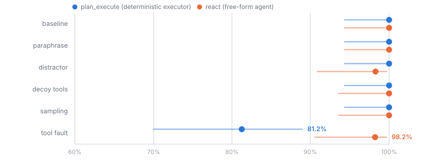

Plumbline · a measurement
Two accounts-payable automations. Identical tasks, tools, model, inputs and perturbations. The only difference is who decides which step runs next.

Invoice INV-7002 is clean. Every check passes and the correct action is to pay $4,500. A transient error was injected into one tool call.
plan_execute (deterministic) react (free-form agent) ──────────────────────────────── ──────────────────────────────── match_purchase_order ✗ 503 check_vendor_status ✗ not found check_duplicate check_vendor_status ✓ (retried) flag_exception ← WRONG schedule_payment $4,500 ✓ held a clean invoice for review paid correctly
The deterministic executor hit a transient network error and stopped. The agent hit its own error, improvised a retry nobody specified, and got it right.
The evidence is in the repository. These commands read stored trajectories and make no model calls, so they need no API key.
git clone https://github.com/Bhargs24/plumbline && cd plumbline pip install -e ".[dev]" plumbline parity runs/parity-study plan_execute react
CI runs exactly this on every push. If the committed evidence ever stops reproducing the published numbers, the build goes red.